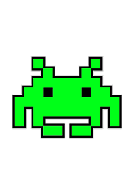
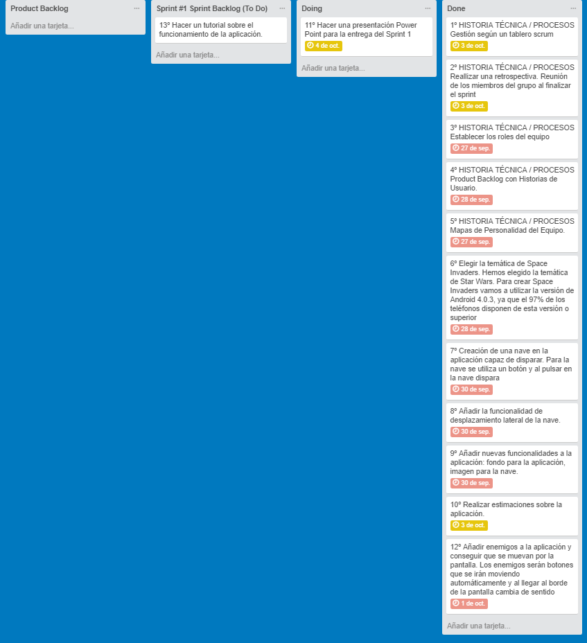
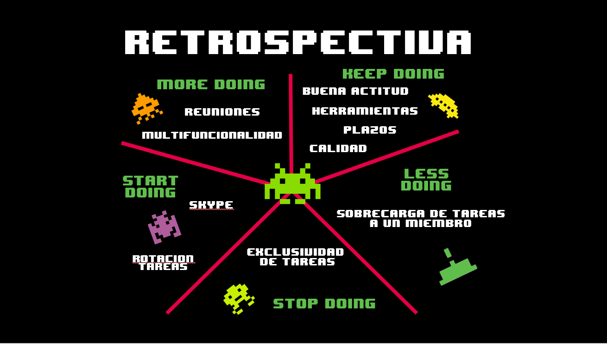
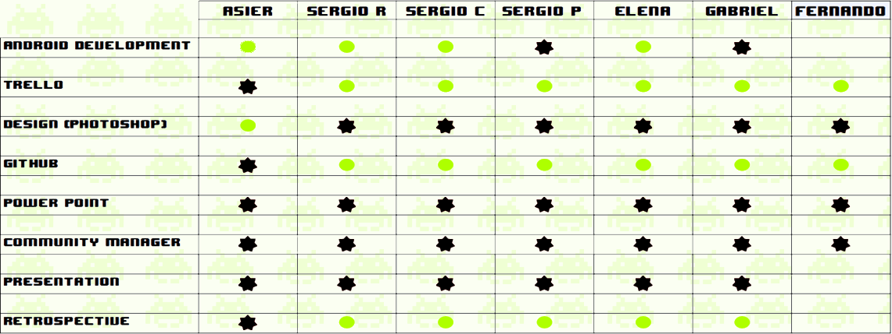
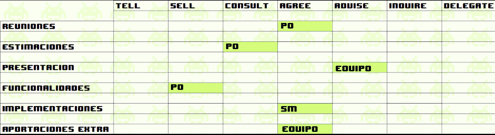
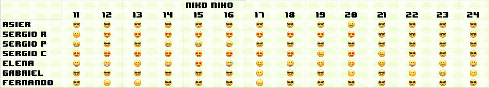
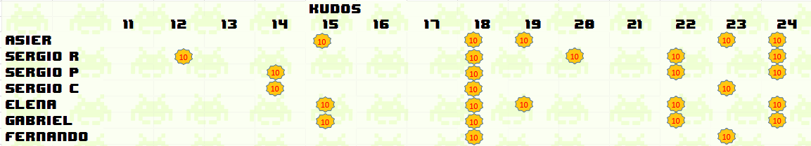

HISTORIA
Bienvenidos a la pagina web, del space invade creado para la práctica de Procesos del Software de 3º del grado en Ingeniería del Software y sus respectivos dobles grados de la Universidad Rey Juan Carlos.
Mas informacion sobre la universidadPROYECTO
El proyecto se basa en la realización del clasico juego del space invader para un movil android.
Aunque parece que lo complicado de esta aplicacion es la realizacion del video juego, en lo que se basa el proyecto es el uso de la metodología scrum a la hora de la organización del mismo.
El equipo de desarrollo de esta aplicacion es el grupo 8, formado por miembros de los dobles de grados de Ingeniería Informatica- Ingeniería Software y Ingeniería Software - Matemáticas.
El proyecto se considera en su fase de desarrollo, y se estima que para principios del mes de diciembre se encuentre en su fase de lanzamiento.
ESPEREMOS QUE OS GUSTE

AYUDA
En este apartado os explicaremos el facil funcionamiento del juego
- Movimientos: El movimiento de la nave se realiza con las pulsaciones de la pantalla, media pantalla izquierda, la nave se desplazará a la izq, y la mitad derecha se desplazará a la derecha.
- Disparo: Para disparar pulsa sobre tu nave
- Tematica: Puedes seleccionar tu tematica tanto de star wars como clasica en el menu de ajustes.
- Sonido: En ajustes lo puedes seleccionar como mas te guste. ON/OFF
Extras
En este apartado pondremos diferentes aportaciones extras
- Tutorial: Enlace al video tutorial
- Twitter:

- GitHub: Enlace al Github de desarrollo
METODOLOGÍA AGIL
La metodología ágil es una forma de desarrollo pensada principalmente para los proyectos en los que el cliente está muy involucrado durante el desarrollo del mismo, ya que no se hace un análisis de requisitos inicial y final sino que los requerimientos del cliente se van incorporando poco en poco en periodos de tiempo denominados SPRINTS en los cuales se van haciendo pequeñas entregas al cliente.
A continuación, hemos destacado diferentes puntos importantes en los cuales hay diferencias con los otros métodos de desarrollo de software, ya sea iterativo o cascada.
1. FASES DE UN SPRINT
Las fases de un proyecto ágil son las siguientes:
- SPRINT PLANNING:
Esta es la primera fase del sprint, en esta fase se realiza una reunión en la cual se deciden las diferentes historias técnicas y de usuario que se tienen que realizar durante el sprint.
- DESARROLLO:
Esta fase es la más grande ya que es donde realmente se concentra toda la realización de la tarea pedida por el cliente. Para organizar este tipo de desarrollos se utiliza SCRUM, esto es principalmente dividir el trabajo en 3 columnas (TO DO, DOING, DONE) e ir pasando cada tarea a realizar de una a otra en función se vayan realizando en el proyecto. Hay herramientas como Trello.
Un tema muy importante es el orden que tienen las diferentes tareas ya que se ordenan en función a los puntos de historia, es decir la importancia que le da el cliente a dicha tarea, siendo lógicamente las que más importancia tiene las primeras en realizarse. Dentro de la fase de Doing se realiza ya el testing, siendo esta una de las principales diferencias con otras metodologías.
- RETROSPECTIVA:
En esta fase del sprint se comprueba con un vistazo lo realizado durante el sprint y se ponen en común cosas que se han hecho bien, mal o regular para mejorar para siguientes sprints.
 - REVIEW:
Esta fase final del sprint se basa principalmente en la entrega al cliente de lo realizado en el sprint.
2. EQUIPO DE PROYECTO
El equipo es uno de los principales elementos de la metodología ágil, ya que son la base de todo proyecto. Para una buena realización de la metodología ágil el equipo tiene que ser un equipo completo, equilibrado y de un tamaño de 7 personas +-2.
Para comprobar si un equipo está equilibrado se debe realizar un Tablero de multifuncionalidad donde se verán las capacidades de cada miembro del equipo. Es casi imprescindible que en cada columna haya al menos una * y uno o varios.
3.ORGANIZACIÓN
Para organizar un equipo es imprescindible delimitar unos roles en el equipo.
- Product Owner
- Scrum Master
- Equipo
El Product Owner forma parte del negocio. Es el propietario del producto y gestiona las necesidades que serán satisfechas por el proyecto y asegura el valor del trabajo que el equipo lleva a cabo. Es un rol primario junto al equipo Scrum.
Una vez asignado a cada uno su puesto dentro del grupo de trabajo, se debe realizar un tablero de delegación para indicar, como se toman decisiones y quien las toma.
Para el día a día es bueno conocer cómo se encuentran los componentes del equipo y también reconocer los méritos cuando uno realiza un buen trabajo. Para ello se debe realizar un tablero de niko- niko y uno de kudos o recompensas.
 4. HISTORIA DE USUARIO
Es lo que el cliente o el usuario quiere que se implemente: son una descripción breve, de una funcionalidad software tal y como la percibe el usuario. Debe ser pequeña. Para reunir varias de ellas se realizan EPICs. Son historias de usuario grandes que sirven para contar una funcionalidad amplia.
El Product Owner se encarga de los Temas (meses, años) (conjuntos de Epics o Epopeyas), los Epics (semanas, meses) (conjuntos de Historias de Usuario) y las Historias de Usuario (2/3 días) (conjuntos de Tareas). El equipo se encarga de las Tareas (horas). Además, las Epopeyas y las Historias de Usuario representan el “qué” y las Tareas representan el “cómo”.
5. ESTIMACIÓN
Cuando hablamos de estimar, es mirar hacia adelante para intentar adivinar el futuro. Cuando estimamos, podemos mirar dos cosas: cuándo tendré algo y cuánto puedo hacer. La estimación es importante porque tiene relación el cuándo por el dinero.
A menor experiencia, más pobre será la estimación. También empeora si el cliente no tiene claro lo que quiere.
Si en este modelo, el tiempo es dinero, las empresas buscarán lo más barato. Esto conduce a que se reduzcan los tiempos. Si los reducimos demasiado, el cliente será el afectado porque no recibirá el producto
Es importante recordar que el Product Backlog nunca debe estar ordenado por estimación. El equipo se encarga de estimar, ya que no es responsabilidad del Product Owner.
En agilidad, usamos la predicción de la velocidad y los puntos historia para estimar la duración de un proyecto.
6. PUNTOS HISTORIA
No existe una fórmula para medir los puntos historia. Los puntos historia nos sirven principalmente para dos cosas: medir el tiempo y la velocidad del equipo. El punto historia mide la complejidad y el esfuerzo junto con el riesgo (incertidumbre). A mayor puntos historia, más compleja se supone la tarea.
Conclusiones importantes
Estimar por horas es lo peor por la herencia industrial, porque eran seleccionadas por los que no trabajaban. Además, era mejor el que echaba más horas. También es malo contar el avance por horas. Esta visión evolucionó al trabajo completado, añadiendo puntos de historia a las historias de usuario. El problema es asignar mal los puntos de historia, es decir, que lo que se haya hecho no valga para nada (perder la orientación del valor).
La última forma de estimar es el valor completado. Que consiste en hacer primero aquellas tareas que más valor tienen. Si hay un buen Product Owner ordenando por valor el Product Backlog, no hace falta estimar.